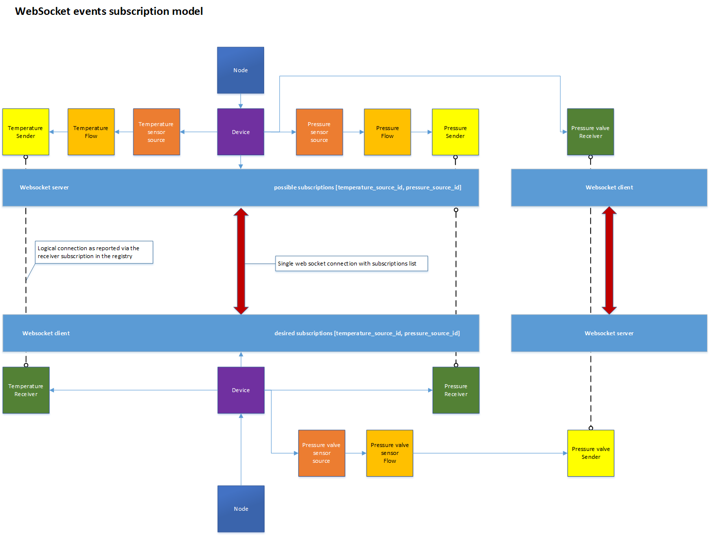

WebSocket Transport
(c) AMWA 2018, CC Attribution-NoDerivatives 4.0 International (CC BY-ND 4.0)
This document describes the use of the WebSocket transport.
Other sections can be accessed from the Overview.
1. Introduction
- Brokerless
- Supports encryption
- Web app friendly
- Every sender device needs to run a server
- The problem of late joiners can be solved as the server can send initial states upon connection
- Events filtering needs to happen within the sender device
The NMOS Events & Tally community has shown interest in using the WebSocket protocol as a transport for events and tally information as it is a familiar protocol which has already been used in the NMOS ecosystem. There is an ongoing debate about WebSocket topologies being less efficient than broker based transport topologies like MQTT in a large-scale system because each sending device needs to host its own server to cope with demand. One of the cases we have identified which could be improved is when a device hosts multiple receivers which are interested in multiple senders on another device. In a simple receiver to sender connection mapping a connection would be required from each receiver to each sender. This could be improved with a device subscriptions model whereby you would only have a single connection between the devices with a subscriptions list.

With that in mind, going forward you will see concepts such as server and client which represent the senders’ collection and the interested receivers’ collection. Furthermore, even though there will only be a single WebSocket URL for the sender, each client will have its own two-way communication channel (WebSocket connection) with the server with unique subscriptions.
2. NMOS Resources transport
NMOS resources using WebSocket will use the urn:x-nmos:transport:websocket transport.
3. Connection management
Only IS-05 connection management will be used for connection management of resources defined in this specification.
3.1 connection_uri
The connection_uri transport parameter of the IS-05 v1.1 compliant sender is the URL of the associated WebSocket server. All senders on one NMOS device should offer the same connection_uri to allow the number of WebSocket connections needed to be reduced. It may be appropriate for the same connection_uri to be offered for the senders of all devices on a node.
Filtering is achieved using the subscription mechanism explained in the following sections.
For a sender, this value is intended to be static. This means the IS-05 constraints should list the static value in an 'enum' for this parameter. For a receiver, an empty constraint object may be appropriate for this parameter.
3.2 connection_authorization
The connection_authorization parameter is a boolean value which indicates whether authorization is used for communication with the WebSocket server.
As specified in IS-05:
* If the parameter is set to "auto" the sender or receiver should establish for itself which protocol it should use, based on a discovery mechanism or its own internal configuration.
For senders and receivers that do not support both modes, the IS-05 constraints should list the supported value in an 'enum' for this parameter.
3.3 ext_is_07_rest_api_url
The ext_is_07_rest_api_url transport parameter represents the URL to the Events API resource which offers the current state and type of an event emitter (source) (see Events API)
For a sender, this value is intended to be static. This means the IS-05 constraints should list the static value in an 'enum' for this parameter. For a receiver, an empty constraint object may be appropriate for this parameter.
The use of "auto" is not defined for this parameter.
3.4 ext_is_07_source_id
The ext_is_07_source_id transport parameter represents the source id which is the emitter of the event. This is required for the WebSocket client to be able to build the subscriptions required from the server. Furthermore, the source id is required to filter and help the client determine which of the connected receivers needs to be notified when an event is consumed.
For a sender, this value is intended to be static. This means the IS-05 constraints should list the static value in an 'enum' for this parameter. For a receiver, an empty constraint object may be appropriate for this parameter.
The use of "auto" is not defined for this parameter.
Example of IS-05 PATCH request on a receiver:
{
"sender_id": "9f463872-9621-4939-aa3a-dc3c82d8578b",
"master_enable": true,
"activation": {
"mode": "activate_immediate",
"requested_time": null
},
"transport_params": [
{
"connection_uri": "ws://hostname/x-nmos/events/v1.0/devices/58f6b536-ca4c-43fd-880a-9df2501fc125",
"ext_is_07_source_id": "9f463872-9621-4939-aa3a-dc3c82d8578b",
"ext_is_07_rest_api_url": "http://hostname/x-nmos/events/v1.0/sources/9f463872-9621-4939-aa3a-dc3c82d8578b/"
}
]
}
There is no mandated URL base path for servers to use for connection_uri. The value above, /x-nmos/events/v1.0/devices/{deviceId}, is an example.
3.5 Disconnecting/Parking
A disconnection IS-05 PATCH request should always trigger the client to remove the associated source id from the current WebSocket subscriptions list. If the source is the last item in the subscriptions list, then it is recommended for the client to close the underlying WebSocket connection.
4. Subscriptions strategy
Upon connection, a client needs to initialise its subscriptions list by sending a subscription command on the WebSocket connection.
After establishing the subscriptions list, the client will start receiving events only for the sources it has subscribed to. A client may update its subscriptions list at any point in time.
Each time a client submits its subscriptions list (sends a new subscription command), the server will resend all the current states for each of the subscribed sources. If a client needs to reconnect, then the WebSocket connection context needs to be re-established so the client must send a new subscription command re-initialising its subscription.
A subscription command is only sent as a consequence of an NMOS Connection Management action or a reconnection.
4.1 Heartbeats
Upon connection, the client is required to report its health every 5 seconds in order to maintain its connection and subscription. This is similar to the behaviour required by the registry for nodes in IS-04 specification. Every health command should be followed by a health response (see Message types).
The server is expected to check health commands and after a 12 seconds timeout (2 consecutive missed health commands plus 2 seconds to allow for latencies) it should clear the subscriptions for that particular client and close the WebSocket connection. The server is also required to respond to a heartbeat within 5 seconds of receiving the health command.
Example health command:
{
"command": "health",
"timestamp": "1441974485:12300000"
}
Example health response:
{
"timing": {
"origin_timestamp": "1441974485:12300000",
"creation_timestamp": "1441974485:23400000"
},
"message_type": "health"
}
4.2 Connection logic flow
Step 1
If the client does not currently have a connection to the connection_uri WebSocket server, it opens a connection.
The connection_authorization flag identifies whether client authorization is used.
Step 2
The client submits its initial or updated subscriptions list including the ext_is_07_source_id, by sending a subscription command.
Example:
{
"command": "subscription",
"sources": [
"9f463872-9621-4939-aa3a-dc3c82d8578b",
"772116e0-b4ba-43b1-9ffc-70287c17cb9e",
"674e32cb-84b5-475e-b7db-7821530c4375"
]
}
Step 3
The client receives the initial state for each source in its subscriptions list thus solving the problem of late joiners.
Step 4
The client continues to receive events only from the subscribed sources.
Step 5
The client issues health commands every 5 seconds as described above.
5. Late joiners
As described above a client will receive the initial states for all the sources in its subscriptions list.
A client may also choose to query the Events API using ext_is_07_rest_api_url to access the latest state of an emitter in order to verify the current state.